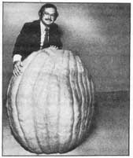
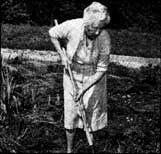
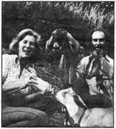

DEREK FELL In case you didn't recognize him, the man in the photo (standing, rear) is Derek Fell . .. and-take our word for it-he's no less extraordinary than the 312-pound pumpkin he hides behind.
If the name Derek Fell means nothing to you, it's only because you've never seen Derek on NBC's Today Show, or read his best-selling How to Plant a Vegetable Gar den (Countryside Books, 1975), or heard of the gardening column he writes for more than 5,000 newspapers and magazines nationwide. But no matter. You will be seeing Derek's name very soon . . . right here in the pages of MOTHER, where he'll be giving advice to beginning (and inveterate) gardeners.
You'd think that a guy like Derek-who, until recently, was the director of both the National Garden Bureau (an information office sponsored by the American garden seed industry) and All-America Selections (the national seed trials--wouldn't have time to appear on talk shows, write books and newspaper columns, edit seed catalogs, and do the zillion-and-one other things he does. But (as we've already explained) Derek Fell is no ordinary guy. When he needs time, he makes it!
Considering Derek's myriad accomplishments in the field of horticulture, it perhaps comes as a surprise to learn that Mr. Fell's own personal garden (from which spring forth the vegetables that feed his family of four) measures only 12 feet by 20 feet. His explanation: "When you're retired and you have all day to spend in the garden-or you want to take on a vegetable garden as a full-time hobby-then a 50 foot by 50 foot-or larger-plot is fine. But the average family man doesn't have all that time to spend." Quite a statement, coming from a fellow who's about as "average" as a 312-pound pumpkin.
Watch for Derek Fell's articles in upcoming issues of MOTHER.
"Over 7,000 people have come to look at my garden," says Ruth Stout, "and I'd be willing to bet a bale of hay that most of them think: 'Good grief, is this little patch what I came all this way to see?'
" Actually, Ruth's visitors are more likely to have come to see Ruth herself. Her unpretentious organic garden-famed as it is-can only be a bonus.
Ms. Stout began gardening in 1930 when she moved from New York City to her Redding Ridge, Connecticut farm. But Ruth, mind you, didn't just garden . . . in typical Stout style, she ignored custom and tradition and pioneered an entirely new technique for raising vegetables.
Instead of plowing, cultivating, weeding, and watering her soil, Ms. Stout began mulching her garden all year round. She continually blanketed the vegetable patch with six to eight inches of organic waste, leaves, hay, and cornstalks . . . and then just let nature take care of the soil-building work that most gardeners spend hours doing themselves.
Her neighbors, observing the newcomer's strange ways, were less than encouraging.
"Back then, they thought I was crazy," Ruth is happy to tell you. But the bumper crops of fresh vegetables which quickly sprang from Ms. Stout's "unusual" garden soon proved otherwise.
Convinced that she had discovered something important, Ruth began teaching her methods to others by lecturing and writing. In her first book, How To Have a Green Thumb Without an Aching Back, she declared, "Throw away your spade and hoe. . . we now enter a new era." And thus began the age of . . . well, of what is best summed up in the title of her second book: Gardening Without Work.
Today-at age 92-Ruth Stout is known as "Le Grande Dame of Mulch". Her followers number in the tens of thousands. But fame doesn't mean much to an itinerant freethinker. Simplicity is more than just the key to Ruth's gardening techniques . . . it's her way of life.
Two years ago, author Patrick Rivers (whose credits include The Survivalist- a book which features THE Mother Earth News(restricted)-and Living On Less) decided-along with his wife, Shirley-to adopt a more ecologically sound lifestyle. In other words, go back to the land. Thus it was that the couple picked up stakes, cashed their insurance policies, and moved from an apartment in London to eight acres of derelict land on the Welsh border.
Today-two years older and (in Patrick's words) "ten years wiser"-the Rivers couple can boast of two acres planted in vegetables and fruits, two acres set aside for pasture, another two acres cleared (mostly by hand) of bracken and blackberry bushes, a geodesic dome greenhouse brimming with foliage, a solar water heater, and a fully restored 16th century cottage.
The couple still has no flush toilet, no bathroom, and no refrigeration (instead, they use a cold cellar built in the side of a hill). Considering where they were three years ago, however, the Riverses have come an awfully long way toward their goal of self-sufficiency. And-like those who've gone before them-they've learned a good deal about what it means to work with nature, and with other human beings.
"Perhaps the most significant thing we've learned," says Patrick, "is the existence of something we call The Flow. The Flow can consist of help from neighbors-or strangers-when you most need it and least expect it . . . but it can also be felt as the undeserved kindness you encounter when your opinions of others have plummeted. It has a hundred guises. To experience it, you must believe in it. Faith is involved. But it exists . . . of that I'm sure."
Patrick Rivers: author, journalist, and-after two years-homesteader.
Are you up on the latest doings of someone (such as any of the innovative pioneers featured in MOTHER'S Plowboy Interviews) who's achieved recognition in a field regularly covered by this magazine? If so, send us a tightly written 200-word report on that person (along with a snappy black-and-white photograph), and-providing your report is used in NEWSWORTHIES-we'll gladly send you a flat $50 ($25 without the photo). Send contributions to NEWSWORTHIES Editor, THE Mother Earth News(restricted) P.O. Box 70, Hendersonville, N.C. 28739.
|
|
 |
 |
|
 |
|
|